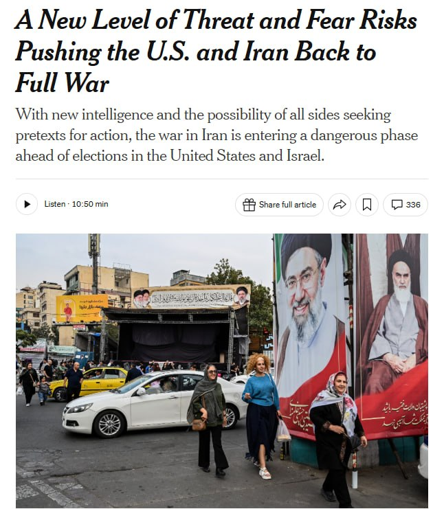

Топор Live
@toporlive
Топор Live
@toporlive
Риск возобновления полномасштабной войны между США и Ираном растёт The New York Times.

⚡️Риск возобновления полномасштабной войны между США и Ираном растёт, — The New York Times.
По данным американской разведки, Иран находится на продвинутой стадии подготовки покушений на чиновников и дипломатов США. В Тегеране при этом ожидают нового масштабного наступления США и Израиля.
На фоне угроз Вашингтон усилил меры безопасности и ранее вывел бомбардировщики B-1 с базы в Великобритании. Пентагон также расширил список возможных целей для ударов по Ирану, включив в него энергетическую и ключевую экономическую инфраструктуру страны.
По данным американской разведки, Иран находится на продвинутой стадии подготовки покушений на чиновников и дипломатов США. В Тегеране при этом ожидают нового масштабного наступления США и Израиля.
На фоне угроз Вашингтон усилил меры безопасности и ранее вывел бомбардировщики B-1 с базы в Великобритании. Пентагон также расширил список возможных целей для ударов по Ирану, включив в него энергетическую и ключевую экономическую инфраструктуру страны.